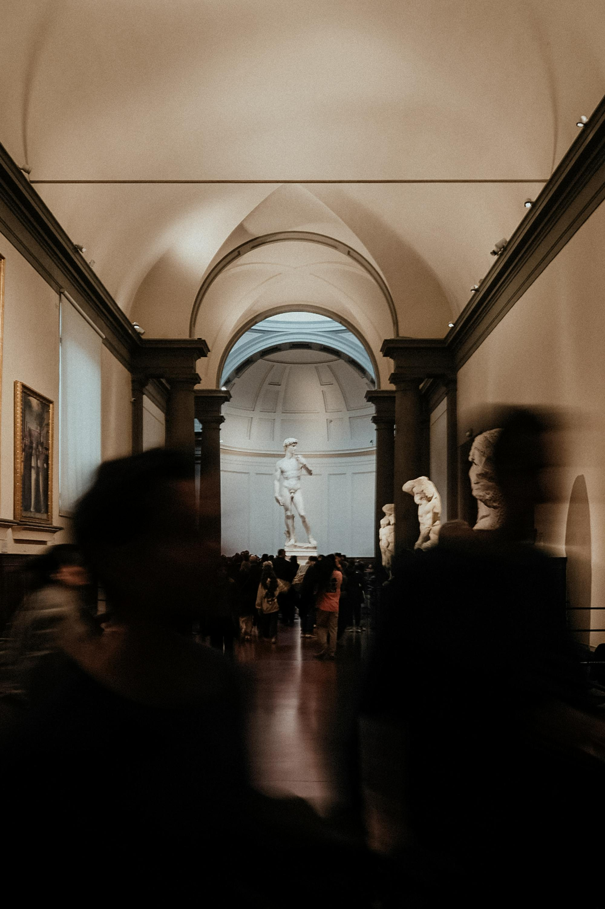

@GalleryExplorer
Sarah L.
@GalleryExplorer
Sarah L.
Saatchi Gallery
Loved the emerging artists exhibition! ARTERY helped me discover this space.
A digital archive of curated perspectives.
@GalleryExplorer
Sarah L.
Saatchi Gallery
Loved the emerging artists exhibition! ARTERY helped me discover this space.
 @FASHIONSTUDENT
Maya J.
@FASHIONSTUDENT
Maya J.
V&A Museum
The textiles exhibit blew my mind! Endless inspiration here.
 @ArtCurator
Leo M.
@ArtCurator
Leo M.
British Museum
An incredible journey through time. Highly recommend the guided tours.
Tate Modern
The scale of the installations was inspiring for my coursework!

@SketchLife Elena R.National Gallery
Spent the afternoon sketching. Perfect for keeping track of my reflections.
“An essential artery for the London art scene.”
— Artforum
“The most sophisticated digital aide for the discerning visitor.”
— The Art Newspaper
“Quietly revolutionising how we document our artistic encounters.”
— Frieze